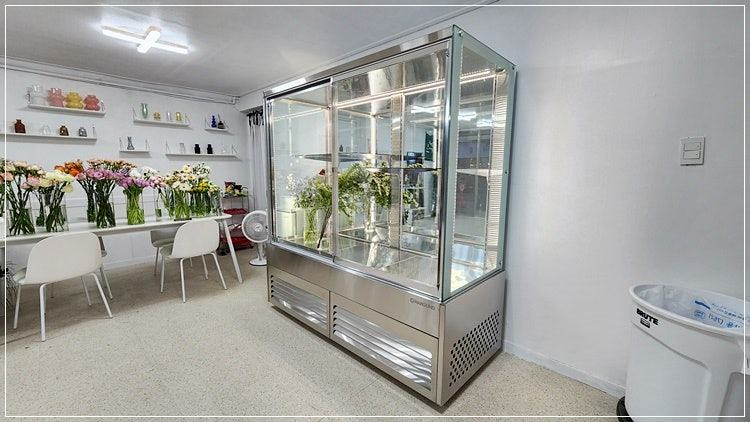
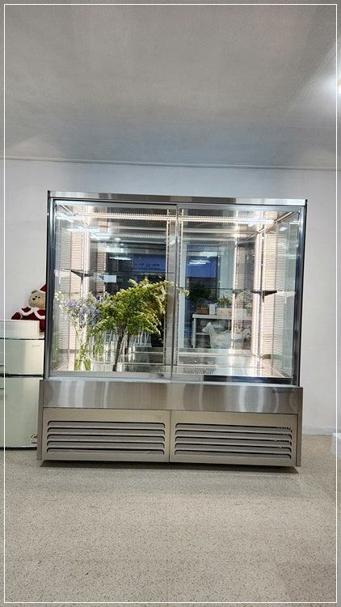
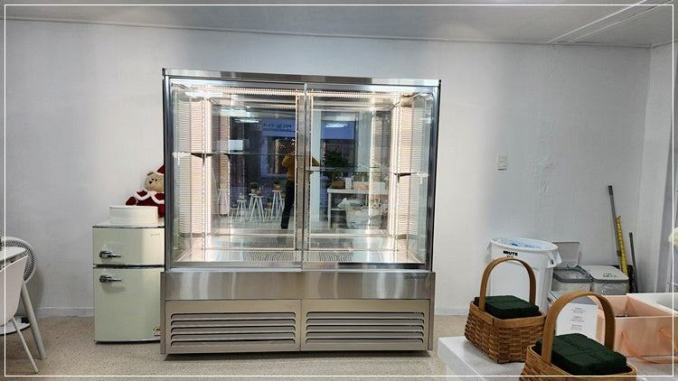
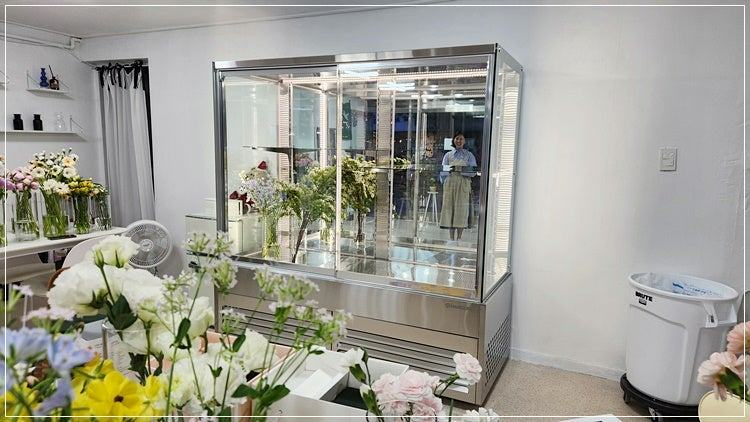
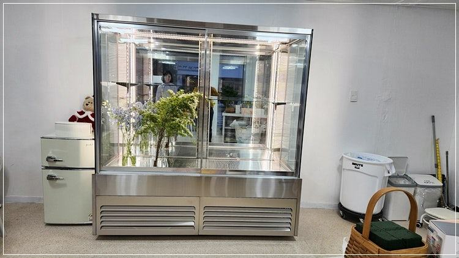
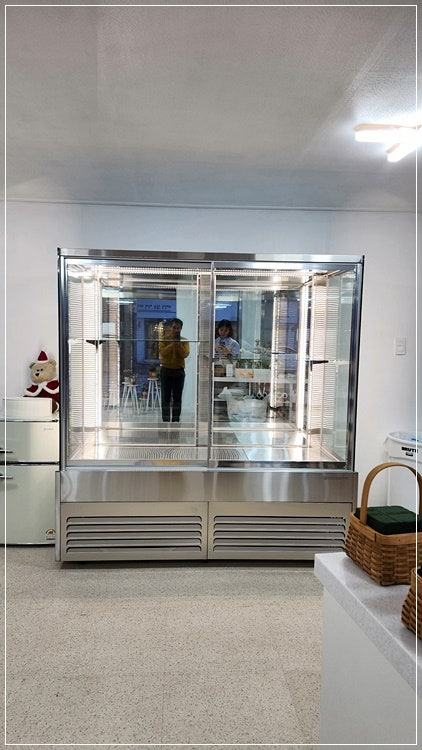
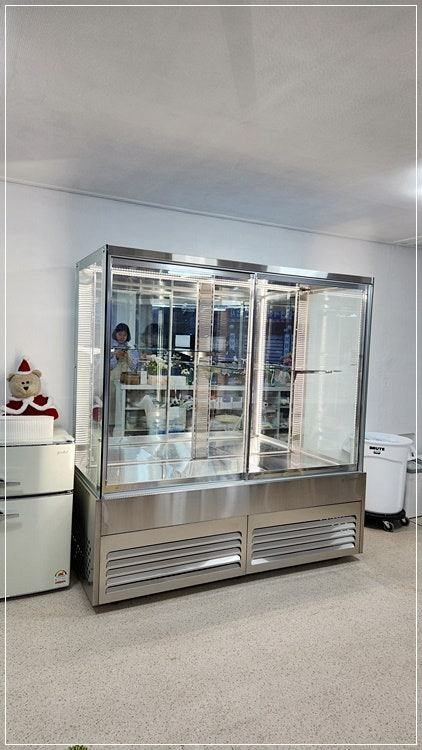
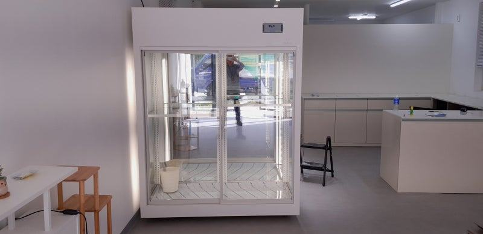

꽃냉장고
꽃냉장고 도어, 여닫이와 슬라이딩 중 우리 꽃집에 맞는 쪽

꽃냉장고 도어는 통로가 넉넉하고 큰 꽃 양동이를 자주 넣고 빼는 매장이면 넓게 열리는 여닫이가, 통로가 좁고 손님 앞에서 자주 여는 매장이면 슬라이딩이 편합니다. 손님이 직접 꺼내는지, 사장님만 여는지에 따라 문 위치도 함께 정하세요.
안녕하세요. 꽃집과 플라워 공방 쇼케이스를 직접 설계하고 제작하는 한성쇼케이스입니다.
꽃냉장고를 상담하다 보면 크기와 온도는 꼼꼼히 정하시는데, 문은 "보통 쓰는 걸로요" 하고 넘기시는 경우가 많습니다.
그런데 막상 써 보면 하루에도 수십 번 여닫는 것이 문이라, 문 방식이 작업 속도와 꽃 상태를 모두 좌우합니다.
꽃냉장고는 키 큰 꽃이 담긴 양동이를 통째로 넣고 빼야 하고, 문을 열 때마다 내부 습도가 빠져나갑니다.
음료나 디저트 쇼케이스와는 문을 고르는 기준이 다를 수밖에 없습니다.
오늘은 꽃냉장고 도어를 고를 때 꽃집 운영 방식별로 무엇을 보면 되는지 정리해 보겠습니다.
1. 여닫이 문, 넓게 열려야 할 때
여닫이 문은 문 전체가 활짝 열려 입구가 넓습니다. 키가 큰 절화나 큰 양동이를 자주 넣고 빼는 꽃집, 새벽 시장에서 들어온 꽃을 한꺼번에 정리해 넣는 매장에 잘 맞습니다.
손이 양동이로 가득 찬 상태에서도 문틀에 걸리지 않고 드나들 수 있습니다.
대신 문이 열리는 반경만큼 앞 공간이 필요합니다. 쇼케이스 앞 통로가 좁거나 작업대가 가까이 붙어 있으면 문을 열 때마다 걸리게 됩니다.
문이 어느 방향으로 열리는지도 작업대 위치에 맞춰 정해 두세요.
문짝이 크면 무게도 늘어나니 경첩과 손잡이가 매일의 사용을 견딜 수 있는 구조인지도 확인해 보세요. 물 묻은 손으로 자주 여는 꽃집 특성상 손잡이가 미끄럽지 않은지도 작은 차이를 만듭니다.
- 문이 열리는 반경만큼 앞 공간을 확보하세요.
- 작업대 쪽으로 열리지 않게 방향을 정하세요.
2. 슬라이딩 문, 통로가 좁을 때
슬라이딩 문은 옆으로 밀어 여닫기 때문에 앞 공간이 거의 필요 없습니다. 매장이 좁거나 쇼케이스 앞을 손님이 지나다니는 꽃집이라면 동선을 막지 않아 편합니다.
다만 한 번에 열리는 폭이 문 한 짝만큼이라 큰 양동이를 넣을 때는 여닫이보다 불편할 수 있습니다. 주로 다루는 꽃 양동이의 폭과 높이를 재 두시고, 그 크기가 여유 있게 드나드는 폭으로 문을 나눠 달라고 요청하세요.


3. 앞문과 뒷문, 누가 여는가
손님이 직접 꽃을 고르고 꺼내는 셀프 꽃다발 코너라면 손님 쪽에 문이 있어야 합니다. 반대로 사장님이 손님과 이야기하며 꽃을 골라 꺼내 드리는 매장이라면 작업 공간 쪽에 문을 두는 편이 동선이 짧고, 손님 쪽은 통유리로 꽃을 넓게 보여 줄 수 있습니다.
매장 벽면 전체를 꽃냉장고로 쓰는 경우에는 작업 공간에서 여는 문과 손님에게 보여 주는 유리 면을 나눠 설계하면 진열과 작업을 모두 챙길 수 있습니다.
- 셀프 코너는 손님 쪽 문
- 상담형 꽃집은 작업 공간 쪽 문
- 손님 쪽은 통유리로 진열 효과
4. 문을 여는 횟수와 꽃 상태
꽃은 적정 온도와 함께 습도가 유지돼야 꽃잎이 마르지 않습니다. 문을 자주 오래 열면 습한 냉기가 빠져나가고 바깥 공기가 들어와 꽃이 받는 스트레스가 커집니다.
그래서 하루 중 문을 여는 횟수가 많은 매장일수록 문 크기를 필요한 만큼으로 나누고, 자주 꺼내는 꽃은 문 가까운 칸에 두는 것이 좋습니다.
문 패킹이 들뜨지 않았는지도 정기적으로 확인해 주세요.
특히 성수기에는 주문이 몰려 문을 연 채로 꽃을 고르는 일이 잦아집니다. 이 시기에 쓸 꽃은 미리 작업 공간 쪽 양동이에 덜어 두고 쇼케이스 문은 보충할 때만 여는 식으로 운영하시면 내부 상태를 지키기 쉽습니다.
체크리스트
- 주로 쓰는 꽃 양동이 폭과 높이
- 쇼케이스 앞 통로 폭
- 여닫이·슬라이딩 중 선택
- 문을 여는 사람(손님·사장님)
- 손님 쪽 유리 면 구성
- 문 패킹 밀착 상태
현장에서 자주 보는 경우: 여러 사람이 자주 여닫는 플라워 공방
규모가 큰 하치형 꽃쇼케이스를 제작했던 플라워 공방은 여러 사람이 함께 사용해 문을 여닫는 횟수가 잦은 곳이었습니다.
이런 환경에서는 꽃이 시들지 않도록 내부 온도와 습도 조절이 가능한 구조로 직접 설계하고, 사용하는 입장에서 문과 동선을 함께 고려했습니다.
하치형은 기계실과 쿨러를 아래쪽에 두는 형태로, 위쪽에 두는 상치형과 구분됩니다. 기계실 위치에 따라 내부 높이와 문 높이가 달라지기 때문에, 키 큰 꽃을 많이 다루는 매장이라면 문 방식과 함께 기계실 위치도 상담 때 정해 두시는 것이 좋습니다.








자주 묻는 질문
슬라이딩 문은 냉기가 더 많이 새나요?
문 방식보다 패킹 밀착 상태와 여는 시간이 더 큰 영향을 줍니다. 어떤 방식이든 문을 짧게 여닫고 패킹 상태를 정기적으로 확인해 주세요.
문 한 짝 폭을 꽃 양동이 크기에 맞출 수 있나요?
가능합니다. 주로 쓰는 양동이 폭과 높이를 알려 주시면 그 크기가 여유 있게 드나드는 폭으로 문을 나눠 제작합니다.
손님 쪽과 작업 쪽 모두 문을 달 수 있나요?
매장 구조에 따라 양쪽에서 여는 구성도 검토할 수 있습니다. 다만 문이 늘수록 냉기 관리에 신경 쓸 부분도 늘어나니 운영 방식을 먼저 말씀해 주세요.
매장 조건에 맞춰 만드는 한성쇼케이스
원하시는 제품 사진과 설치할 공간 사진만 보내 주셔도 매장에 맞는 구성을 추천해 드립니다.
- 전국 240여 개 A/S 전담 센터 운영
- 본사 대량 자재 매입으로 품질 대비 합리적인 가격
- 유럽제·삼성 냉각 콤프레셔 적용
- 국내 최초 쇼케이스 전문 디자이너 상주
매장 폭과 원하는 진열 구성을 알려 주세요. 실측과 견적을 안내해 드립니다.
031-986-2458